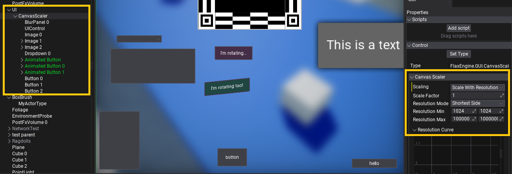

Canvas Scaler
The CanvasScaler control is a scaling component for user interface to target multiple different game resolutions (eg. mobile screens). It can be used to constrain UI to min/max resolutions or scale depending on the display DPI or resolution. Use Scaling property to define the logic of the scaler and ScaleFactor property to control UI scale manually.
| Mode | Description |
|---|---|
| Constant Pixel Size | Applies constant scale to the whole UI in pixels. |
| Constant Physical Size | Applies constant scale to the whole UI in physical units (depends on the screen DPI). Ensures the UI will have specific real-world size no matter the screen resolution. |
| Scale With Resolution | Applies min/max scaling to the UI depending on the screen resolution. Ensures the UI size won't go below min or above max resolution to maintain it's readability. |
| Scale With Dpi | Applies scaling curve to the UI depending on the screen DPI. |
Example setup
Below is the example setup for the canvas scaler which ensure the UI will be scaled with resolution (shortest side of the screen edge) with Resolution Curve, and UI size will be limited to the min size of 1024x1024.

Tip
You can right-click on curve editor and select option Edit all keyframes to modify curve data if the Editor UI doesn't handle proper editing.
The best way to use Canvas Scaler is to add it directly as a child of the Canvas* and setup UI inside it.